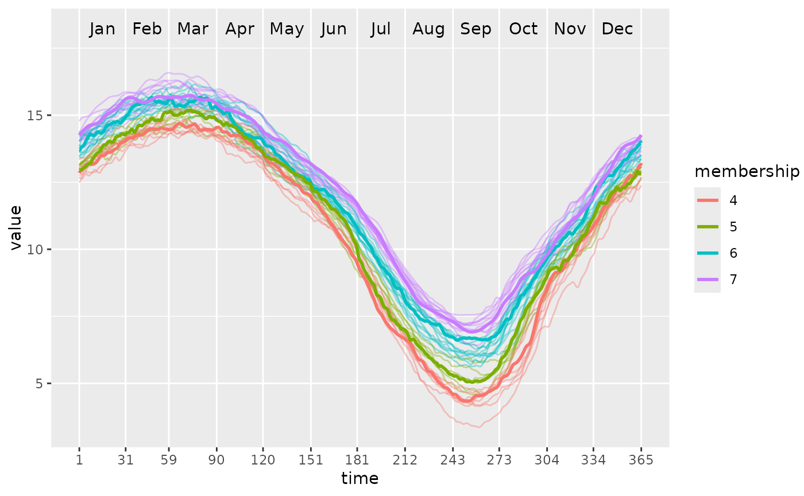

After partitioning using PULS, this function can plot the functional waves and color different clusters as well as their medoids.
Usage
ggwave(
toclust.fd,
intervals,
puls.obj,
xlab = NULL,
ylab = NULL,
lwd = 0.5,
alpha = 0.4,
lwd.med = 1
)Arguments
- toclust.fd
A functional data object (i.e., having class
fd) created fromfdapackage. Seefda::fd().- intervals
A data set (or matrix) with rows are intervals and columns are the beginning and ending indexes of of the interval.
- puls.obj
A
PULSobject as a result ofPULS().- xlab
Labels for x-axis. If not provided, the labels stored in
fdobject will be used.- ylab
Labels for y-axis. If not provided, the labels stored in
fdobject will be used.- lwd
Linewidth of normal waves.
- alpha
Transparency of normal waves.
- lwd.med
Linewidth of medoid waves.
Examples
# \donttest{
library(fda)
# Build a simple fd object from already smoothed smoothed_arctic
data(smoothed_arctic)
NBASIS <- 300
NORDER <- 4
y <- t(as.matrix(smoothed_arctic[, -1]))
splinebasis <- create.bspline.basis(rangeval = c(1, 365),
nbasis = NBASIS,
norder = NORDER)
fdParobj <- fdPar(fdobj = splinebasis,
Lfdobj = 2,
# No need for any more smoothing
lambda = .000001)
yfd <- smooth.basis(argvals = 1:365, y = y, fdParobj = fdParobj)
Jan <- c(1, 31); Feb <- c(31, 59); Mar <- c(59, 90)
Apr <- c(90, 120); May <- c(120, 151); Jun <- c(151, 181)
Jul <- c(181, 212); Aug <- c(212, 243); Sep <- c(243, 273)
Oct <- c(273, 304); Nov <- c(304, 334); Dec <- c(334, 365)
intervals <-
rbind(Jan, Feb, Mar, Apr, May, Jun, Jul, Aug, Sep, Oct, Nov, Dec)
PULS4_pam <- PULS(toclust.fd = yfd$fd, intervals = intervals,
nclusters = 4, method = "pam")
ggwave(toclust.fd = yfd$fd, intervals = intervals, puls = PULS4_pam)

# }